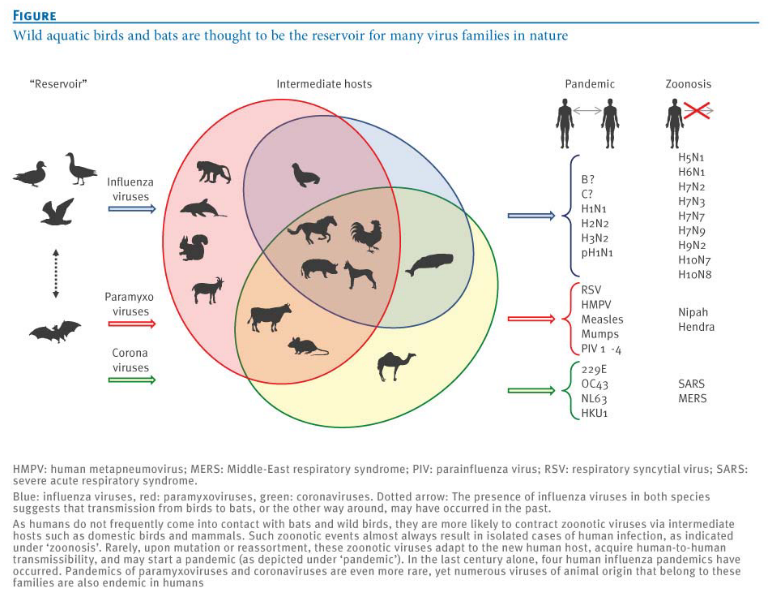
7 Emerging and Re-Emerging Viruses
Re-emerging viruses were once a big deal for people’s health, causing significant problems. Over time, though, these issues went down. However, now they’re making a comeback and causing health problems again.
An emerging virus is a newly discovered virus that has the potential to spread more and make people sick. It’s like a virus that’s just been found and has the ability to increase in how often it shows up and lead to diseases.
Several factors play a role in the emergence of viruses:
Firstly, viruses can adapt over time through processes like mutation, which means they change in a way that allows them to spread more easily.
Secondly, climate change is another factor. As the Earth’s climate shifts, it can create conditions that favor the growth and spread of new viruses.
Thirdly, economic development activities such as deforestation and changes in land use can contribute to the emergence of viruses. When we alter the environment, it can affect the balance between viruses and their hosts.
Fourthly, rapid travel, especially between continents, can speed up the spread of viruses. People moving quickly from one place to another can carry viruses with them, leading to new outbreaks in different regions.
Fifthly, the breakdown of public health care systems, particularly during times of war or crisis, can create conditions that allow viruses to thrive and spread.
Additionally, factors like poverty and social inequality can also contribute to the emergence of viruses. Limited access to healthcare and poor living conditions can make it easier for viruses to affect communities.
Furthermore, the intentional use of viruses for harmful purposes, known as bioterrorism, is another factor that can lead to the emergence of dangerous viruses.
Lastly, advancements in bioscience, such as the cost associated with developing effective vaccines, can influence the emergence of viruses. The availability and affordability of preventive measures play a crucial role in controlling the spread of viruses.
7.1 Human Pathogens
Human pathogens use different strategies to spread:
Some viruses persist in humans by staying in a chronic or latent state with no other reservoir. For example, the Herpes simplex virus operates this way.
Others don’t stick around in humans but need to keep infecting new human hosts to survive. Diseases like measles and poliomyelitis follow this strategy.
Then, there are viruses that mainly hang out in nonhuman hosts and only accidentally infect humans. Rabies is an example of a virus that works this way. It’s important to note that some viruses, like influenza and SARS, can adapt to spread between humans. This adaptation is a significant source for the emergence of new viruses that infect humans.
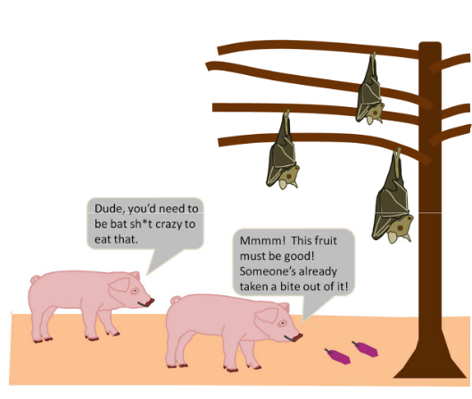
It may not always be possible to remove the intermediate hosts (e.g., bats are important to the ecosystem, culling pigs would severely hurt a country’s economy, etc).
7.1.1 Influenza Viruses
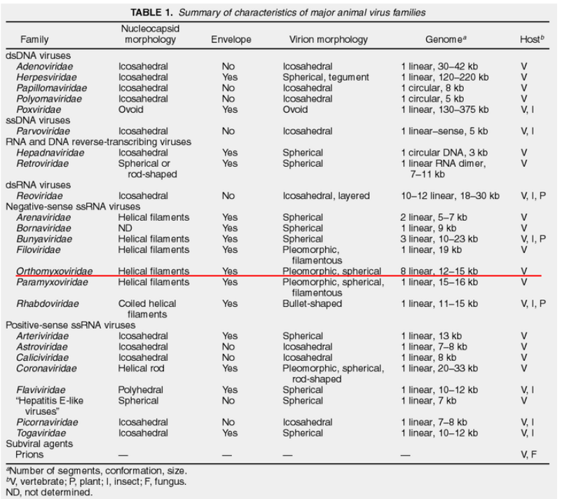
Influenza viruses serve as a notable example of a virus that constantly poses emerging, reemerging, and current threats to public health. Understanding the principles involved and related issues in dealing with influenza is crucial. It’s important to note that while the discussion focuses on influenza, the same principles can be applied to other emerging viruses, such as the SARS-CoV-2 virus responsible for COVID-19.
Influenza is considered an emerging threat because it undergoes changes, or mutations, allowing new strains to emerge regularly. These changes can make existing vaccines less effective, requiring scientists to continually update them to match the evolving virus. The virus can also reemerge, causing outbreaks or pandemics, as seen in historical events like the Spanish flu of 1918. Additionally, influenza remains a current threat, with seasonal flu outbreaks affecting communities worldwide.
The principles involved in addressing influenza include monitoring and understanding the virus’s ability to change, developing effective vaccines, and implementing measures for prevention and control. Issues related to influenza management encompass the need for global collaboration in surveillance, the challenges of predicting which strains will dominate in a given season, and the importance of timely and widespread vaccination efforts.
While the focus here is on influenza, these principles and issues are applicable to other emerging viruses, such as SARS-CoV-2. Just as with influenza, understanding the genetic variations, developing effective vaccines, and establishing robust public health measures are critical components in addressing and mitigating the impact of emerging viruses on a global scale.
7.1.1.1 Categorizing Influenza Viruses
In the world of influenza viruses, classification is a key tool for scientists to understand their diverse nature. These viruses are divided into types A, B, and C, based on differences in the antigens found in their nucleocapsid (NP) and matrix (M) proteins. An intriguing addition to this classification is the relatively new D subtype, identified in cattle. Fortunately, as of now, this subtype is not known to infect humans. This system of categorization allows researchers to discern specific characteristics of each influenza virus, paving the way for targeted studies and strategic prevention measures.
Another facet of influenza classification involves the host specificity of each virus type. Influenza A, with its broad reach, can infect avian, human, and various mammalian species, including swine. Influenza B, in contrast, primarily targets humans, while Influenza C is mainly associated with human infections. This distinction in host preferences is crucial in understanding the potential impact and transmission dynamics of different influenza viruses within various populations.
Delving deeper into the molecular realm, each influenza virus type boasts a distinct set of proteins. While these proteins often share functional similarities, they are expressed from different genomic segments. In the case of Influenza A and B viruses, there are 8 genomic segments, whereas Influenza C (and D) virus possesses 7 segments. This genetic diversity contributes to the adaptability and evolution of influenza viruses, influencing their ability to infect different hosts and evade immune responses.
Furthermore, scientists employ subtyping based on the antigenicity of surface spike proteins to gain a finer understanding of each influenza virus. This additional layer of classification allows researchers to discern specific strains within each virus type, aiding in the development of vaccines and targeted intervention strategies. In summary, the intricate classification of influenza viruses provides a roadmap for scientists, offering valuable insights into their behavior, potential threats, and avenues for effective control and prevention.
7.1.1.2 Structure of Influenza Viruses
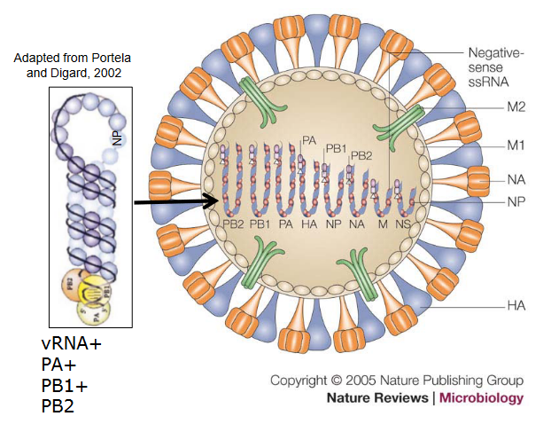
The structure of influenza viruses is fascinatingly intricate. Encased in a lipid envelope, which is enriched in raft lipids and derived from the host cell, these viral particles are relatively small, ranging from 80 to 120 nanometers in diameter. What makes them visually distinctive are the protein spikes that radiate from the virus. Among these spikes, there’s the rod-shaped haemagglutinin (HA) and the mushroom-shaped neuraminidase (NA).
Beneath this outer layer, the genome of the influenza virus consists of negative-sense RNA segments. An interesting aspect is that the virus carries its own RNA-dependent RNA polymerase (RDRP). This polymerase is crucial for the virus to replicate its RNA. The NP, PB1, PB2, and PA proteins come together to form the viral RNP (ribonucleoprotein), creating a distinct structure known as the RNP. This structure plays a key role in the virus’s ability to hijack host cells for its own replication.
Within the viral envelope, there are low levels of other integral virus membrane proteins, including M2, NB, and CM2. These proteins contribute to various functions in the virus life cycle. Additionally, the virus matrix (M) protein underlies the virus envelope, providing structural support to the overall architecture of the influenza virus.
7.2 Variation Between Viruses
7.2.1 Antigenic Drift
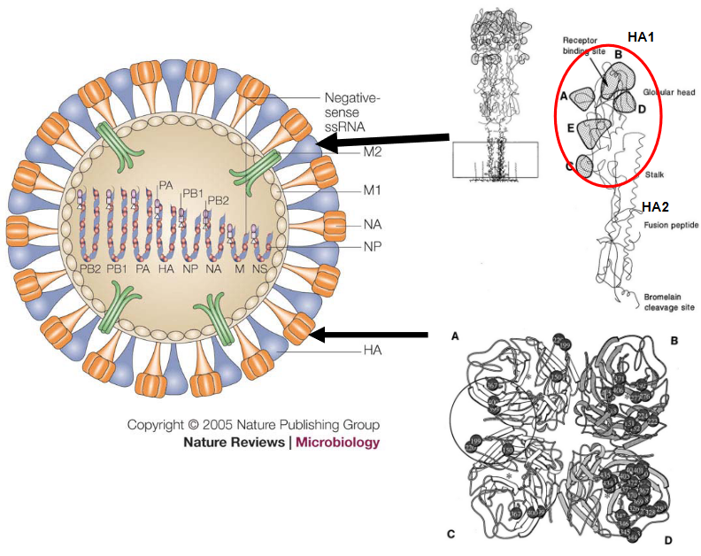
“Antigenic drift” is a term used to describe minor changes in the antigenic nature of influenza viruses. These changes result from accumulated amino acid changes, with a primary focus on two key proteins: hemagglutinin (HA) and neuraminidase (NA). This phenomenon is relevant to influenza A, B, and C viruses.
Historical examples of antigenic drift include the H1N1 virus responsible for the 1918 Spanish flu, the H2N2 virus associated with the 1957 Asian flu, and the H3N2 virus linked to the 1968 Hong Kong flu. In the case of the HA protein, antigenic drift occurs through amino acid changes at five specific antigenic sites, giving rise to different influenza virus subtypes. These changes have a significant impact as they prevent the binding of antibodies generated from previous infections, making it challenging for the immune system to recognize and defend against the modified virus.
In human influenza A viruses, antibody selection plays a role in driving antigenic drift. The immune system’s response to previous infections influences the evolution of the virus by selecting for variants that can escape existing antibodies. Antigenic sites are also identified in the NA protein, adding another layer to the complexity of influenza virus evolution.
7.2.2 Reassortment
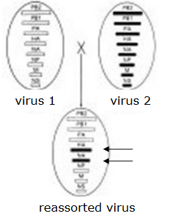
Reassortment is a phenomenon observed in influenza A, B, and C viruses, where these viruses have the ability to create reassorted or mixed viruses. This occurs when two different influenza viruses infect the same host cell, leading to the exchange of genetic material between the two viruses.
An illustrative example of reassortment is seen in the influenza A virus A/Kong Kong/68 H3N2. In this case, the reassorted virus contains genes for the hemagglutinin (HA) and polymerase basic 1 (PB1) from an H3 virus and the neuraminidase (NA) and five other genes from a circulating H2N2 virus. This mixing of genetic material can result in a new virus with a combination of genetic elements from different parental viruses.
7.2.3 Alternative Reading Frames
Alternative reading frames, exemplified by the PB1-F2 protein, introduce an intriguing layer of complexity to influenza viruses. The PB1-F2 protein is encoded by alternative reading frames on a specific genomic segment and gives rise to both the traditional PB1 protein and the unique PB1-F2 protein. It’s important to note that this alternative reading frame is not present in all influenza viruses.
This distinctive reading frame has been identified in significant influenza pandemic strains, including those from 1918, 1957, and 1968. The PB1-F2 protein is proposed to play a role in inducing apoptosis, a process of programmed cell death, particularly in macrophages. This programmed cell death in macrophages, which are immune cells that play a key role in defense against infections, can have implications for the pathogenicity of the virus.
The impact extends to alveolar macrophages, which are crucial in defending the lungs. If these macrophages are impaired due to the actions of PB1-F2, it can contribute to the severity of the infection. Additionally, the PB1-F2 protein has been implicated in facilitating bacterial secondary infections, adding another layer of complexity to the interplay between the influenza virus and the host immune response. Understanding the role of alternative reading frames like PB1-F2 provides insights into the various strategies employed by influenza viruses to modulate host responses and influence the course of infection.
7.3 The Influenza Virus
7.3.1 Human Transmission
Human transmission of influenza primarily occurs through human-to-human contact, often facilitated by the spread of respiratory droplets in the form of aerosols. This mode of transmission is a key factor in the occurrence of both epidemics and pandemics of influenza.
Epidemics are characterized by the widespread occurrence of influenza within a specific region or community. Seasonal influenza, a familiar term, refers to the regular, often annual, occurrence of epidemics. The size and impact of these epidemics are closely linked to the immunologic status of the population. The concept of herd immunity, where a significant portion of the population becomes immune to a specific virus either through vaccination or previous infection, plays a crucial role in mitigating the spread of influenza during epidemics. The higher the level of immunity in the population, the more challenging it is for the virus to find susceptible individuals, thus limiting the scale of the epidemic.
7.3.1.0.1 Pandemics
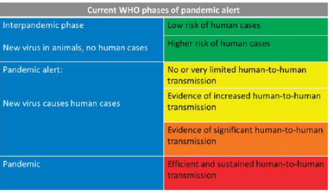
Pandemics in the context of influenza occur when a new subtype of the virus, not previously encountered by the existing human population, emerges. The critical characteristic distinguishing pandemics from regular epidemics is the lack or limited presence of preexisting immunity in the population. Unlike seasonal epidemics, where some level of immunity may exist due to previous exposure or vaccination, pandemics arise from influenza strains that are entirely new to the human immune system.
The degree of severity associated with a pandemic depends on the specific characteristics of the emerging strain. Some pandemic strains may exhibit mild symptoms and lower fatality rates, while others can be more severe and pose significant public health challenges. The unpredictability of the severity is a distinctive feature of pandemics, making it crucial for public health authorities to closely monitor and respond to emerging strains to mitigate their impact on the global population.
7.3.1.2 Vaccines
Vaccines are crucial tools in preventing and controlling the spread of influenza, but they require time for preparation. Traditionally, influenza vaccines have been developed based on the major circulating strains in a specific region. This involves predicting the most likely strains to be prevalent in the upcoming flu season.
Regarding the use of RNA vaccines, there has been significant progress in recent years, and RNA-based influenza vaccines are being explored. These vaccines use genetic material, such as messenger RNA (mRNA), to stimulate an immune response against the virus. RNA vaccines offer certain advantages, including a faster production process compared to traditional methods.
Most influenza vaccines are typically produced using eggs. The process involves growing the virus in eggs and then inactivating it to create the vaccine. However, this method has limitations, and newer technologies, such as cell-based and recombinant vaccine production, are being developed to overcome these challenges.
Reverse genetics has emerged as a valuable tool in the manufacture of influenza virus vaccines. This technique allows scientists to manipulate the genetic material of the virus, facilitating the development of vaccines with desired characteristics. Reverse genetics has contributed to advancements in vaccine production, including the creation of candidate vaccines that can be tailored to match circulating strains more precisely.
7.3.1.2.1 During the 2009 H1N1 Outbreak
Vaccine production during the emergence of a new influenza virus, especially during a pandemic, poses challenges due to the limited time available to prepare sufficient vaccine stocks. A notable example is the pandemic of 2009, triggered by the emergence of a new influenza virus strain known as pH1N1/2009. The rapid emergence and global dissemination of this virus left little time to produce the necessary vaccine stocks to effectively combat the spread of the virus.
In response to the challenges posed by the pH1N1/2009 virus, alternative measures were employed to control its transmission. Antiviral drugs, such as Tamiflu, played a key role in managing and mitigating the impact of the pandemic. These drugs were used to treat infected individuals and help prevent further spread. Additionally, strategies such as virus detection and the quarantine of infected individuals were implemented to curb the transmission of the virus within communities.
The experience with the pH1N1/2009 pandemic underscored the importance of having multiple tools and strategies in place for the control of influenza viruses, especially when vaccine production may be constrained by time limitations during the early stages of a pandemic. Antiviral drugs, rapid detection methods, and effective public health measures remain crucial components of the response to emerging influenza viruses when timely vaccine production may not be feasible.
7.3.2 Bird Transmissions
Transmission by birds, especially aquatic birds, plays a significant role in the dynamics of influenza A viruses. All known subtypes of influenza A viruses have been identified in both domestic and wild aquatic birds. Among these birds, feral water birds, such as ducks and geese, are particularly noteworthy for hosting the largest number of influenza viruses.
In ducks, a substantial proportion of avian influenza strains replicate in the lungs and gastrointestinal tract. The virus is shed in nasal secretions and feces, contributing to its transmission. This shedding of the virus by infected birds becomes a key factor in the circulation of influenza A viruses. Ducks, being migratory waterfowl, play a crucial role in the continual circulation of influenza A viruses.
The natural reservoir of influenza A viruses in aquatic birds, combined with their migratory behaviors, creates an environment where these viruses can persist and spread. The ability of influenza A viruses to infect and be maintained in bird populations poses challenges for the prevention and control of avian influenza, especially considering the potential for the viruses to spill over into other species, including humans.
7.3.2.1 In Birds?
In ducks, influenza A virus infection typically does not cause severe illness, rendering the infection avirulent in these birds. This unique characteristic allows ducks to serve as a natural reservoir for influenza A viruses. Despite being carriers of the virus, ducks often do not show significant signs of illness, enabling the virus to persist within their populations.
However, the story changes when it comes to certain subtypes of the virus, specifically H5 and H7. In domestic poultry, these subtypes have the potential to produce systemic infections that can be far more severe. Systemic infection refers to the involvement of multiple organs and tissues throughout the body. In cases where domestic poultry, such as chickens or turkeys, are infected with H5 or H7 subtypes, high mortality rates can be associated with the infection.
The increased severity observed in domestic poultry contrasts with the avirulent nature of influenza A virus infection in ducks. This variation in the impact of different subtypes highlights the complexity of influenza viruses and the importance of understanding their behavior in different host species. It also underscores the potential risks associated with certain subtypes, especially those with the ability to cause systemic infection and higher mortality rates in domestic poultry.
7.3.3 Swine Transmission
Swine can play a role in the transmission of influenza viruses, being susceptible to infection with certain subtypes, notably H1N1 and H3N2. In swine populations, there are instances of classic swine influenza as well as viruses that are antigenically similar to those found in avian and human hosts.
The transmission of influenza from swine to humans has been demonstrated using serology techniques. This indicates that swine can serve as a source of influenza viruses that have the potential to infect humans. It’s important to note that H3N2 variants have been detected in pigs, and while these infections in pigs typically result in mild disease symptoms, the concern arises from the possibility of these viruses undergoing further changes and potentially causing infections in humans.
The ability of swine to be infected with influenza viruses from multiple sources, including avian and human viruses, adds to the complexity of influenza dynamics. This inter-species transmission can contribute to the emergence of novel influenza strains with the potential to infect humans. Monitoring and understanding influenza transmission in swine populations is crucial for assessing and mitigating the risks associated with the cross-species spread of influenza viruses.
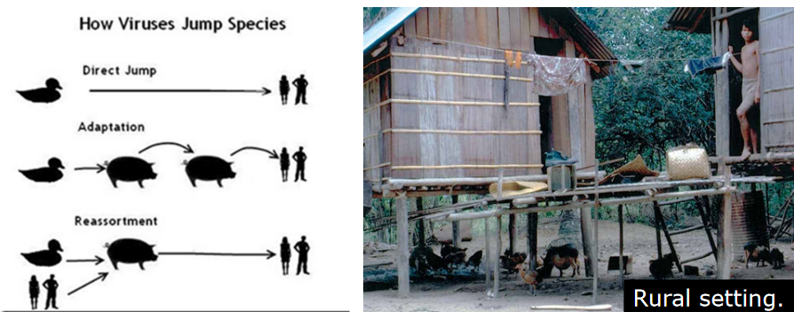
Indeed, influenza variants with the potential to infect humans can emerge through reassortment events involving swine, avian, and human viruses. Swine are thought to act as a “mixing bowl” where different influenza viruses from various sources can undergo genetic reassortment.
In the close proximity of swine, which can be infected by both avian and human influenza viruses, the co-infection of these different strains provides an opportunity for their genetic material to mix and create novel virus variants. This reassortment can result in the emergence of influenza viruses with a combination of genetic elements from swine, avian, and human viruses.
The swine population’s ability to act as an intermediary host for influenza viruses from different sources underscores the importance of monitoring and understanding influenza dynamics in these animals. It also highlights the need for surveillance and control measures to prevent the emergence of novel influenza variants with the potential to cause infections in humans. The role of swine as a “mixing bowl” emphasizes the complex interactions between different influenza virus strains and the importance of addressing the risks associated with cross-species transmission.
7.3.4 First Direct Transmission
Direct transmission of avian influenza viruses to humans, without the involvement of an intermediate species like swine, was first reported in 1997. This transmission event involved the H5N1 subtype and occurred from infected poultry to humans. The H5N1 virus caused high mortality rates in both chickens (ranging from 70% to 100%) and humans (approximately 30%).
Key features of the H5N1 virus in this instance included a polybasic sequence in the hemagglutinin (HA) protein and a shortened stalk region in the neuraminidase (NA) protein. Despite causing severe disease in humans, there was no evidence of human-to-human transmission on this occasion.
This occurrence highlighted that avian influenza viruses have the potential to be directly transmitted to humans, resulting in illness. However, for efficient human-to-human spread, additional changes in the virus, such as mutations or reassortment events, are typically required. The ability of avian influenza viruses to directly infect humans underscores the importance of vigilant surveillance and control measures to monitor and mitigate the risks associated with these viruses. Additionally, understanding the factors that contribute to the adaptation and transmission of avian influenza viruses in humans is crucial for public health preparedness.
7.4 Host Adaptations
Host adaptation in influenza viruses involves various aspects of the virus particle adapting to replicate effectively in a specific host. This process implies that interactions between the virus and the host occur in a species-specific manner, meaning the virus is tailored to exploit the cellular environment of a particular host species.
The adaptation process includes interactions between virus proteins and host cell proteins, and these interactions are often mediated by specific amino acid sequences. The virus must evolve to recognize and interact with host cell factors that facilitate its entry, replication, and exit from the host cell. For example, the virus might need to recognize and bind to specific cell surface receptors on the host cell to initiate the infection process.
Key interactions occur between viral proteins, such as hemagglutinin (HA) and neuraminidase (NA), and host cell proteins. These interactions enable the virus to enter the host cell, replicate its genetic material, assemble new virus particles, and ultimately spread to infect other cells. The adaptation process often involves changes in these viral proteins that allow the virus to efficiently utilize the cellular machinery of the specific host species.
7.4.1 Influenza Polymerase Complex
The influenza virus polymerase complex is a fundamental component responsible for orchestrating the replication and transcription of the viral genome. Comprising three essential proteins—PB1, PB2, and PA—each protein within this complex has distinct functions vital for the virus’s lifecycle. The PA protein contributes endonuclease activity, a critical function involved in cleaving host cell mRNA to initiate viral mRNA synthesis. Additionally, the C-terminal domain of PA serves as an interaction site with the PB1 protein, fostering cohesion within the polymerase complex.
PB1, another key player, boasts polymerase activity essential for the synthesis of viral RNA. Its N-terminal region engages in a pivotal interaction with the PA protein, while the C-terminal region binds to the PB2 protein, fortifying the structural integrity of the complex. Moreover, PB1 directly binds to viral RNA, playing a crucial role in the initiation of viral RNA synthesis, a foundational step in the virus’s replication process.
In the intricate dance of the polymerase complex, the PB2 protein plays its part with a cap binding domain crucial for cap-snatching—a mechanism where the virus pilfers short fragments of capped RNA from host cell mRNA to prime viral mRNA synthesis. Additionally, PB2’s possession of a nuclear localization signal (NLS) guides the polymerase complex into the host cell nucleus, where the intricacies of viral replication and transcription unfold.
7.4.1.1 mRNA Synthesis
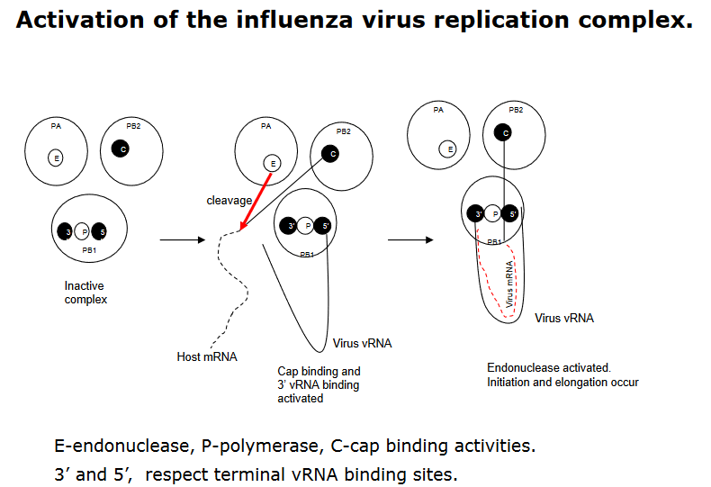
In the context of mRNA synthesis during influenza virus replication, the polymerase complex plays a pivotal role and relies on the presence of viral RNA (vRNA) for activation. Within this complex, the PB1 subunit holds a critical function, housing the binding site for the 5’-terminal sequence of vRNA. The binding of this 5’-terminal sequence serves as a key activator, triggering the cap binding activity of the PB2 protein and initiating the PB1 binding activity at the 3’-terminal sequence of vRNA.
This sequential activation has a cascading effect on the polymerase complex’s functionality. The binding of the 3’-end of vRNA not only activates the cap binding activity of PB2 but also triggers an endonuclease activity in the PA protein. This endonuclease activity is essential for cleaving host cell mRNA, a crucial step in the cap-snatching process that provides primers for viral mRNA synthesis.
Ultimately, the nucleotide addition, a fundamental step in mRNA synthesis, is catalyzed by the PB1 protein. This orchestrated series of events highlights the intricate coordination within the influenza virus polymerase complex during mRNA synthesis. The interplay of these subunits and their activities showcases the adaptability of the virus in utilizing host cell machinery for its own replication, offering insights into potential targets for antiviral interventions.
7.4.2 Cap Snatching
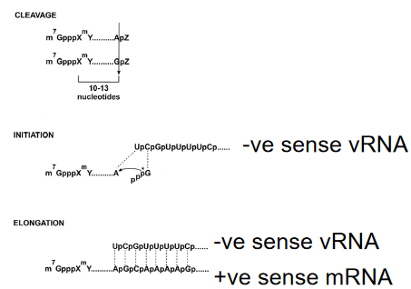
Cap snatching is a distinctive mechanism employed by influenza viruses during their replication cycle. Early studies demonstrated that the synthesis of viral mRNA is hindered by α-amanitin, an inhibitor targeting RNA polymerase II (RNA pol II), a key enzyme involved in transcribing cellular genes. This inhibition underscores the dependence of influenza virus replication on the host-cell nuclear machinery.
In the cap-snatching process, the virus hijacks host cell transcripts to acquire primers for the synthesis of its mRNA. Specifically, the primers are short capped RNA fragments denoted as m7 GpppXm, where X represents various nucleotides. These fragments are originally generated by the activity of RNA polymerase II in the host cell. The term “cap snatching” aptly describes this unique viral strategy, where the influenza virus seizes these capped fragments from host transcripts to kickstart its own mRNA synthesis.
This distinctive feature sets influenza apart from other viruses and showcases the virus’s ability to co-opt host cell components for its own replication. Understanding cap snatching provides insights into potential vulnerabilities in the viral life cycle and offers avenues for the development of antiviral strategies aimed at disrupting this specific mechanism.
7.4.3 Host Protein Mutations
Host adaptation of influenza virus P proteins, particularly mutations associated with avian-to-human adaptation, has been a subject of interest in influenza research. Notable mutations like E627K, T271A, E158G, and D701M have been identified in these proteins. While the molecular basis of these mutations in terms of species adaptation remains uncertain in general, some insights have been gleaned from specific cases.
For instance, the E627K mutation in the PB2 protein has been implicated in host adaptation. This mutation is thought to enable high replication rates at the lower temperatures typically found in human respiratory tracts compared to avian hosts. Additionally, changes in the sequence may influence interactions between the PB2 protein and the NP (nucleoprotein) protein, suggesting a potential mechanism for adaptation.
Furthermore, the involvement of ANP32A, a host cellular protein, has been considered in the context of host adaptation. Sequence changes, such as those observed in the identified mutations, may confer differences in the interaction of influenza P proteins with cellular proteins, potentially influencing the virus’s ability to replicate and adapt to new host species.
While the precise molecular mechanisms underlying these mutations and their roles in host adaptation are not fully elucidated, ongoing research aims to unravel the intricate interplay between viral proteins and host factors. Understanding these interactions is crucial for predicting and mitigating the risks associated with the emergence of influenza strains with increased potential for human transmission.
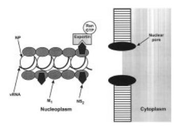
Indeed, other sequence changes in the PB2 protein of influenza virus have been implicated in interactions with host cellular components, particularly importins. One notable example is the D701M mutation in the PB2 protein. This mutation has been found to enhance the binding of the PB2 protein to mammalian importins.
Importins are cellular proteins that play a crucial role in the transport of molecules, including viral proteins, into the nucleus of host cells. The D701M mutation appears to influence the efficiency and specificity of these interactions, potentially facilitating the transport of viral components into the nucleus of mammalian cells more effectively.
7.4.4 Receptor Usage
The receptor usage of influenza viruses is a crucial factor in determining their ability to infect different species. Human influenza viruses, particularly H3 strains, predominantly use sialyoliogosaccharides terminated by α2,6 galactose for binding, whereas avian influenza viruses favor binding to α2,3 galactose.
This receptor specificity is dictated by the structure of the hemagglutinin (HA) binding pocket, a viral protein that plays a key role in the initial stages of viral entry into host cells. Avian intestines primarily contain α2,3 linkages, pig trachea features both α2,3 and α2,6 linkages, and human trachea predominantly has α2,6 linkages. This structural variation in sialic acid linkages acts as a determinant for the specificity of the virus, influencing its ability to transfer between different species.
For example, the preference for α2,3 linkages in avian viruses serves as a restriction for direct transmission to humans, as human respiratory tissues predominantly feature α2,6 linkages. Pigs, however, play a unique role as potential intermediate hosts, as they possess both human (α2,6 galactose) and avian (α2,3 galactose) receptors. This characteristic makes swine a significant host in the interspecies transmission of influenza viruses, potentially facilitating the adaptation of avian viruses to human hosts. Understanding these receptor-specific interactions is crucial for predicting and monitoring the emergence of influenza strains with pandemic potential.
7.4.5 Activating HA Protein
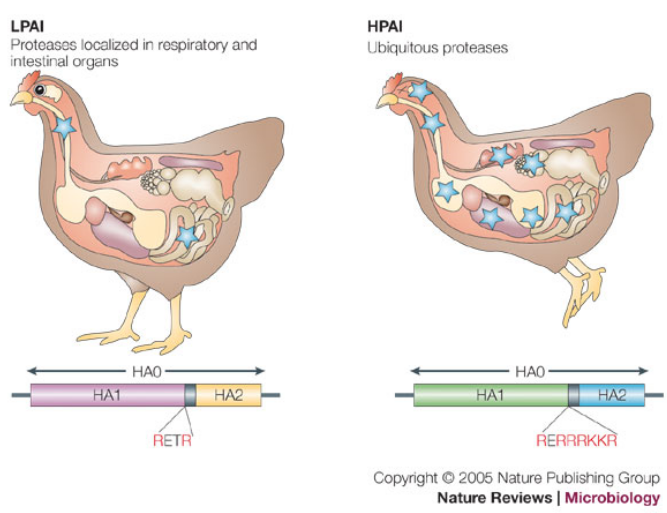
The hemagglutinin (HA) protein is a central player in the pathogenicity of influenza viruses. Its activation is a crucial step, involving protease cleavage that transforms the precursor form (HA0) into the mature protein consisting of HA1 and HA2 subunits.
The cleavage site of HA is notable for its basic residues, and this feature plays a significant role in determining the activation process. There are two main types of cleavage sites based on the number of basic residues present:
Polybasic Sequence (4-6 basic residues): This type of cleavage site is cleaved by enzymes such as furin and furin-like enzymes, which are expressed in various cell types. The presence of these enzymes in a wide range of cells contributes to the broad tissue tropism of influenza viruses. The cleavage by furin-like enzymes is associated with a higher pathogenic potential.
Single/Few Basic Residue: In this case, cleavage occurs through specific proteases found in particular cell types. For example, the Clara protease is a specific protease found in specialized respiratory cells. The specificity of cleavage in certain cell types can influence the tissue tropism and pathogenicity of the virus.
The nature of the cleavage site is a key determinant in the classification of influenza viruses as avirulent or virulent. Viruses with a polybasic cleavage site are often associated with increased pathogenicity, as they can be cleaved by a broader range of host enzymes, allowing for more efficient viral replication and spread. Understanding the nuances of HA proteolytic activation provides insights into the factors influencing the pathogenic potential of influenza viruses.